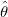
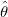
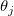
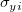
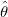
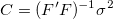
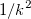
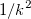
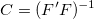

für Parameter  per Standard sowohl von
für Parameter  per Standard sowohl von  als auch von
als auch von  ab.
ab.Letztes Update: 08.08.2018
Um den Standardfehler (SE) des angepassten Parameters und die verwandten Ergebnisse, die mit anderer Software kompatibel sind, beizubehalten, ist das Kontrollkästchen Skalierungsfehler mit Quadrat (Reduziertes Chi-Qdr.) standardmäßig aktiviert. Bei aktiviertem Kontrollkästchen bleibt der Standardfehler SE des Parameters der gleiche, auch wenn die Fehlerbalken sich stark verändern. Wir empfehlen, diese Option zu deaktivieren, wenn Daten mit instrumenteller Gewichtung, beliebigem Datensatz oder direkter Gewichtung angepasst werden, so dass der Standardfehler des Parameters den Betrag der Gewichtung wiedergeben kann.
Das Kontrollkästchen Skalierungsfehler mit Quadrat (Reduziertes Chi-Qdr.) ist auch hier zu finden:
|
Hinweis:
Dieses Kontrollkästchen beeinflusst NUR den Standardfehler der angepassten Parameter. Es beeinflusst NICHT den Anpassungsprozess oder die Parameterwerte in irgendeiner Weise. |
Wir erläutern unten, wie der SE des j-ten angepassten Parameters  sich mit oder ohne Aktivierung von Skalierungsfehler mit Quadrat (Reduziertes Chi-Qdr.) ändert. Der Einfachheit halber nehmen wir an, dass der Fehlerbalken , multipliziert mit einer Konstanten k skaliert ist. Einzelheiten zu Algorithmus bzw. Erklärung finden Sie unter die Theorie der nichtlinearen Kurvenanpassung.
Wenn das Kontrollkästchen Skalierungsfehler mit Quadrat (Reduziertes Chi-Qdr.) aktiviert ist, hängt die Varianz-Kovarianz-Matrix für Parameter  per Standard sowohl von als auch von ab.
|  |
(1) |
|---|
Wobei  die partielle Ableitungsmatrix ist, deren Element in der i-ten Zeile und der j-ten Spalte folgendermaßen lautet:
die partielle Ableitungsmatrix ist, deren Element in der i-ten Zeile und der j-ten Spalte folgendermaßen lautet:
}{\sigma _{yi}\partial \theta _j}") |
(2) |
|---|
und ist die mittlere Residuenvarianz, die vom reduzierten Chi-Quadrat geschätzt wird:
![\sigma^2 = \sum_{i=1}^n \frac{1}{{\sigma_{yi}}^2} \left[Y_i-f(X, \boldsymbol{\theta}) \right ]^2/df_{Error}](../images/Why_Parameters_SE_remains_unchanged_when_error_bar_is_scaled/math-b54f8fb4db112d83dc2ea2282d3ac805.png "\sigma^2 = \sum_{i=1}^n \frac{1}{{\sigma_{yi}}^2} \left[Y_i-f(X, \boldsymbol{\theta}) \right ]^2/df_{Error}") |
(3) |
|---|
SE von ist dann die Quadratwurzel des Werts einer Hauptdiagonalen der Matrix
 |
(4) |
|---|
Wenn die Fehlerbalken mit einem Faktor k geändert werden, werden sowohl als auch  mit einem Faktor  geändert. k wird sie dann jeweils in der Berechnung des Standardfehlers aufheben. Daher bleibt der Standardfehler unverändert, wenn der Fehlerbalken skaliert wird.
mit einem Faktor  geändert. k wird sie dann jeweils in der Berechnung des Standardfehlers aufheben. Daher bleibt der Standardfehler unverändert, wenn der Fehlerbalken skaliert wird.
Wenn Skalierungsfehler mit Quadrat (Reduziertes Chi-Qdr.) deaktiviert ist, wird beim Berechnen der Varianz-Kovarianz-Matrix ausgeschlossen und die Matrix hängt nur von ^{-1}") ab.
ab.
|  |
(5) |
|---|
SE wird jetzt
 |
(6) |
|---|
Wenn die Fehlerbalken mit k multipliziert werden, wird der SE auch mal k sein.
Nach Anpassen der Modelle verwenden wir das reduzierte Chi-Quadrat, um zu prüfen, ob die Gewichtungen den realen Y-Fehler darstellen können oder nicht. Zusammengefasst: Wenn Sie herausfinden, dass der Standardfehler des Parameters sich sehr unterscheidet bei Aktivierung bzw. Deaktivierung des Kontrollkästchens Skalierungsfehler mit Quadrat (Reduziertes Chi-Qdr.), bedeutet dies, dass die Gewichtungen möglicherweise nicht die realen Y-Fehler darstellen. Weitere Informationen finden Sie auf dieser Seite.
Unten befindet sich ein kurzes Beispiel, das belegt, dass Skalierungsfehler mit Quadrat (Reduziertes Chi-Qdr.) nur den Standardfehler der angepassten Parameter beeinflusst.
| X | Y | Y-Fehler |
|---|---|---|
| 11 | 5 | 0.4472 |
| 13 | 10 | 0.6324 |
| 15 | 19 | 0.8718 |
| 17 | 27 | 1.0392 |
| 19 | 49 | 1.4 |
| 21 | 65 | 1.6124 |
| 23 | 77 | 1.755 |
| 25 | 80 | 1.7888 |
| 27 | 77 | 1.755 |
| 29 | 59 | 1.5362 |
| 31 | 44 | 1.3266 |
| 33 | 24 | 0.9798 |
| 35 | 11 | 0.6634 |
| 37 | 14 | 0.7484 |
| 39 | 4 | 0.4 |
Schlüsselwörter:Anpassen, Standardfehler, reduziertes Chi-Quadrat, Fehlervarianz